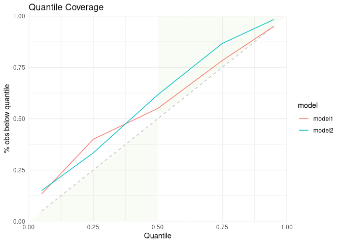
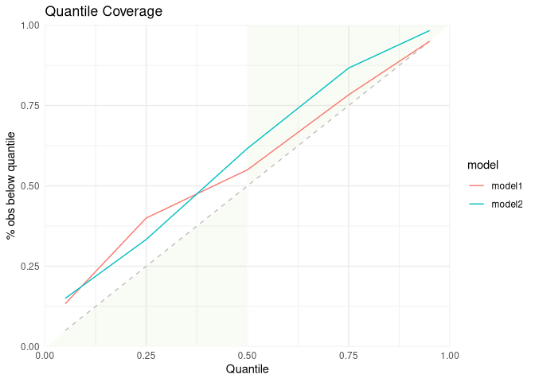

The scoringutils package provides a collection of metrics and proper scoring rules that make it simple to score forecasts against the true observed values.
Installation
The stable version of scoringutils is on CRAN, but is outdated now. We do not recommend using it. Please install the current development version from github using
Functionality
Predictions can either be automatically scored from a data.frame using the function eval_forecasts. Alternatively, evaluation metrics can be accessed directly using lower level functions within a vector/matrix framework.
Predictions can be handled in various formats: scoringutils can handle probabilistic forecasts in either a sample based or a quantile based format. For more detail on the expected input formats please see below. True values can be integer, continuous or binary.
In addition to automatic scoring, scoringutils offers a variety of plots and visualisations.
Scoring Forecasts Automatically
Most of the time, the eval_forecasts function will be able to do the entire evaluation for you. The idea is simple, yet flexible.
All you need to do is to pass in a data.frame that has a column called prediction and one called true_value. Depending on the exact input format, additional columns like sample, quantile or range and boundary are needed. Additional columns may be present to indicate a grouping of forecasts. For example, we could have forecasts made by different models in various locations at different time points, each for several weeks into the future. In this case, we would have additional columns called for example model, date, forecast_date, forecast_horizon and location.
Using the by argument you need to specify the unit of a single forecast. In this example here we would set by = c("model", "date", "forecast_date", "forecast_horizon", "location") (note: if we want to be pedantic, there is a small duplication as the information of “date” is already included in the combination of “forecast_date” and “forecast_horizon”. But as long as there isn’t some weird shift, this doesn’t matter for the purpose of grouping our observations). If you don’t specify by (i.e. by = NULL), scoringutils will automatically use all appropriate present columns. Note that you don’t need to include columns such as quantile or sample in the by argument, as several quantiles / samples make up one forecast.
Using the summarise_by argument you can now choose categories to aggregate over. If you were only interested in scores for the different models, you would specify summarise_by = c("model"). If you wanted to have scores for every model in every location, you would need to specify summarise_by = c("model", "location"). If you wanted to have one score per quantile or one per prediction interval range, you could specify something like summarise_by = c("model", "quantile") or summarise_by = c("model", "quantile", "range") (note again that some information is duplicated in quantile and range, but this doesn’t really matter for grouping purposes). When aggregating, eval_forecasts takes the mean according to the group defined in summarise_by (i.e. in this example, if summarise_by = c("model", "location"), scores will be averaged over all forecast dates, forecast horizons and quantiles to yield one score per model and location). In addition to the mean, you can also obtain the standard deviation of the scores over which you average or any desired quantile (e.g. the median in addition to the mean) by specifying sd = TRUE and quantiles = c(0.5).
Example Evaluation
Here is an example of an evaluation using toy data:
data <- scoringutils::quantile_example_data_plain
print(data, 3, 3)
## true_value id model prediction horizon quantile
## 1: 2.659261 1 model1 -0.6448536 1 0.05
## 2: 2.659261 1 model1 0.3255102 1 0.25
## 3: 2.659261 1 model1 1.0000000 1 0.50
## ---
## 598: 30.189608 30 model2 31.2242353 2 0.50
## 599: 30.189608 30 model2 31.3873685 2 0.95
## 600: 30.189608 30 model2 30.6399809 2 0.75
scoringutils::eval_forecasts(data,
summarise_by = c("model", "quantile", "range"))
## model quantile range interval_score sharpness underprediction
## 1: model1 0.50 0 0.8269027 0.0000000 0.304369095
## 2: model1 0.25 50 0.7760589 0.3044214 0.179681560
## 3: model1 0.75 50 0.7760589 0.3044214 0.179681560
## 4: model1 0.05 90 0.2658170 0.1523911 0.024935181
## 5: model1 0.95 90 0.2658170 0.1523911 0.024935181
## 6: model2 0.50 0 0.9779030 0.0000000 0.350926228
## 7: model2 0.25 50 0.6787509 0.3566315 0.072721303
## 8: model2 0.75 50 0.6787509 0.3566315 0.072721303
## 9: model2 0.05 90 0.2721723 0.1606143 0.008071852
## 10: model2 0.95 90 0.2721723 0.1606143 0.008071852
## overprediction coverage coverage_deviation bias ae
## 1: 0.52253362 0.0000000 0.00000000 0.1566667 0.8269027
## 2: 0.29195591 0.4000000 -0.10000000 0.1566667 1.0557020
## 3: 0.29195591 0.4000000 -0.10000000 0.1566667 1.1052588
## 4: 0.08849074 0.8166667 -0.08333333 0.1566667 1.4575565
## 5: 0.08849074 0.8166667 -0.08333333 0.1566667 1.8171179
## 6: 0.62697674 0.0000000 0.00000000 0.2233333 0.9779030
## 7: 0.24939811 0.5333333 0.03333333 0.2233333 0.8272041
## 8: 0.24939811 0.5333333 0.03333333 0.2233333 1.2435606
## 9: 0.10348616 0.8500000 -0.05000000 0.2233333 1.4528032
## 10: 0.10348616 0.8500000 -0.05000000 0.2233333 1.9825992
## quantile_coverage
## 1: 0.5500000
## 2: 0.4000000
## 3: 0.7833333
## 4: 0.1333333
## 5: 0.9500000
## 6: 0.6166667
## 7: 0.3333333
## 8: 0.8666667
## 9: 0.1500000
## 10: 0.9833333Using an appropriate level of summary, we can easily use the output for visualisation. The scoringutils package offers some built-in functions to help get a sense of the data

(The data is just randomly generated values. We plan to add real example data to make these illustrations more useful in the future)
scores <- scoringutils::eval_forecasts(data,
summarise_by = c("model"))
scoringutils::score_table(scores)
Given this level of aggregation, not all metrics may make sense. In this case, for example, averaging over different quantiles to compute quantile coverage does not make much sense. If you like, you can select specific metrics for the visualisation.
Let us look at calibration:
scores <- scoringutils::eval_forecasts(data,
summarise_by = c("model", "range"))
scoringutils::interval_coverage(scores) +
ggplot2::ggtitle("Interval Coverage")
scoringutils::quantile_coverage(data) +
ggplot2::ggtitle("Quantile Coverage") 

Let us look at the individual components of the weighted interval score:
scores <- scoringutils::eval_forecasts(data,
summarise_by = c("model"))
scoringutils::wis_components(scores)
We can also look at contributions to different metrics by range:
scores <- scoringutils::eval_forecasts(data,
summarise_by = c("model", "range"))
scoringutils::range_plot(scores, y = "interval_score")
We can also visualise metrics using a heatmap:
scores <- scoringutils::eval_forecasts(data,
summarise_by = c("model", "horizon"))
scoringutils::score_heatmap(scores %>%
dplyr::mutate(horizon = as.factor(horizon)),
x = "horizon", metric = "bias")
For an applied example using real data, have look at a preliminary evaluation of models from the German Forecast Hub.
Expected Input Formats
The eval_forecasts function is designed to work with various different input formats. The following formats are currently supported:
quantile forecasts in eiher a plain quantile format or in a format that specifies interval ranges and the boundary of a given interval range.
print(scoringutils::quantile_example_data_plain, 3, 3)
## true_value id model prediction horizon quantile
## 1: 2.659261 1 model1 -0.6448536 1 0.05
## 2: 2.659261 1 model1 0.3255102 1 0.25
## 3: 2.659261 1 model1 1.0000000 1 0.50
## ---
## 598: 30.189608 30 model2 31.2242353 2 0.50
## 599: 30.189608 30 model2 31.3873685 2 0.95
## 600: 30.189608 30 model2 30.6399809 2 0.75
print(scoringutils::quantile_example_data_long, 3, 3)
## true_value id model prediction boundary range horizon
## 1: 2.659261 1 model1 -0.6448536 lower 90 1
## 2: 2.659261 1 model1 0.3255102 lower 50 1
## 3: 2.659261 1 model1 1.0000000 lower 0 1
## ---
## 718: 30.189608 30 model2 31.3873685 upper 90 2
## 719: 30.189608 30 model2 30.6399809 upper 50 2
## 720: 30.189608 30 model2 31.2576984 upper 0 2sample based format with either continuous or integer values
print(scoringutils::integer_example_data, 3, 3)
## # A tibble: 6,000 x 6
## # Groups: id [30]
## id model true_value sample prediction horizon
## <int> <chr> <dbl> <int> <dbl> <dbl>
## 1 1 model1 6 1 5 1
## 2 1 model1 6 2 4 1
## 3 1 model1 6 3 3 1
## 4 1 model1 6 4 3 1
## 5 1 model1 6 5 4 1
## 6 1 model1 6 6 4 1
## 7 1 model1 6 7 5 1
## 8 1 model1 6 8 4 1
## 9 1 model1 6 9 4 1
## 10 1 model1 6 10 6 1
## # … with 5,990 more rows
print(scoringutils::continuous_example_data, 3, 3)
## id model true_value sample prediction horizon
## 1: 1 model1 0.03007379 1 -0.203426069 1
## 2: 1 model1 0.03007379 2 0.007621269 1
## 3: 1 model1 0.03007379 3 -2.086657003 1
## ---
## 5998: 30 model2 -2.93749990 48 -0.079900522 2
## 5999: 30 model2 -2.93749990 49 -1.178524017 2
## 6000: 30 model2 -2.93749990 50 0.638750918 2forecasts in a binary format:
print(scoringutils::binary_example_data, 3, 3)
## # A tibble: 120 x 5
## # Groups: id, model [60]
## id model horizon prediction true_value
## <int> <fct> <dbl> <dbl> <dbl>
## 1 1 model1 1 0.746 0
## 2 1 model1 2 0.522 0
## 3 1 model2 1 0.00958 0
## 4 1 model2 2 0.00671 0
## 5 2 model1 1 0.730 0
## 6 2 model1 2 0.511 0
## 7 2 model2 1 0.0274 0
## 8 2 model2 2 0.0192 0
## 9 3 model1 1 0.543 0
## 10 3 model1 2 0.380 0
## # … with 110 more rowsIt also offers functionality to convert between these formats. For more information have a look at the documentation of the following functions:
scoringutils::sample_to_quantile() # convert from sample based to quantile format
scoringutils::range_to_quantile() # convert from range format to plain quantile
scoringutils::quantile_to_range() # convert the other way round
scoringutils::quantile_to_long() # convert range based format from wide to long
scoringutils::quantile_to_wide() # convert the other way round